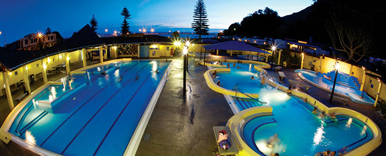

베이오브플렌티 여정
-
1일 : 오클랜드에서 보내는 하루
오클랜드는 두 개의 거대한 항만 사이에 위치해 있으며, 48개의 휴화산을 도시의 곳곳에서 만날 수 있다. 다양한 해양 모험과 와인 트레일, 숲 하이킹, 세련된 도시 문화까지 모두 즐길 수 있는 도시이다. 걷거나 대중교통 또는 투어를 이용해 오클랜드의 도심을 탐방해 보자. 단시간 페리를 타고 와이헤케섬(Waiheke Island) 으로 떠나 와인을 시음하고 맛있는 식사와 자연을 즐기며 오후 한나절 또는 하루 동안 멋진 시간을 보낼 수도 있다. 또는 도심에 위치한 스카이 타워(Sky Tower)에 올라 아드레날린이 분출하는 스카이점프(Skyjump), 스카이워크(SkyWalk)에 도전해 보자.
-
2일 : 오클랜드-타우랑가
다음으로 향할 곳은 베이오브플렌티(Bay of Plenty)에 자리한 햇살 가득한 도시 타우랑가(Tauranga)이다. 아름다운 항만의 가장자리를 따라 사방으로 펼쳐져 있는 타우랑가는 걸어서 쉽게 탐방할 수 있다. 활기 넘치는 카페 문화와 선물 상점, 디자이너 상점 등 구경할 것들이 아주 많다. 해 질 녘, 더스트랜드(The Strand) 거리의 주점과 클럽 등에서 라이브 음악과 밤문화를 즐기거나, 저녁에 카약에 몸을 싣고 반딧불이가 반짝이는 협곡으로 가서 완벽하게 하루를 마무리 하자.
-

3일 : 타우랑가에서 보내는 하루
오늘은 타우랑가의 다양한 즐길 거리를 찾아간다. 전세 보트 또는 크루즈를 타고 바다로 나가 대어 낚시, 스노클링 또는 돌고래 관광을 할 수 있다. 자연을 좋아한다면 멸종 위기의 뉴질랜드 야생동물들이 서식하는 모우토호라(고래섬)를 방문해 보자. 인근의 마운트마웅가누이는 서핑과 해변 산책으로 유명한 여행지이다. 서핑을 배우거나, 해수온천(Hot Salt Water Pools)에서 느긋하게 온천을 즐기거나, 해변의 모래사장에서 휴식을 취해 보자.
-
4일 : 타우랑가-로토루아
타우랑가에서 로토루아(Rotorua)까지는 짧은 거리이기 때문에 탐방을 할 시간적 여유가 많다. 로토루아는 연중 어느 계절에 가도 좋은 여행지이다. 또한 불의 고리라 불리는 환태평양 지진대 한가운데에 자리하고 있기 때문에, 어디에서나 화산 활동을 관찰할 수 있다. 여러 지열 공원 중 한두 곳을 방문해 분출하는 간헐천과 증기가 솟는 지열천을 구경한 후에, 치유력이 있는 천연 온천을 즐겨 보자. 모험을 즐기고 싶다면 로토루아만한 곳이 없다. 로토루아는 최근 몇 년 동안 아드레날린이 솟구치는 액티비티의 중심지로 각광 받고 있으며, 오고(OGO), 슈윕(shweeb), 스웁(swoop) 등 이색적인 액티비티를 체험할 수 있다.
-
5~6일 : 로토루아와 주변 지역 탐방
테푸이아(Te Puia), 미타이 마오리 빌리지(Mitai Maori Village) 또는 타마키 마오리 빌리지(Tamaki Maori Village)에서 뉴질랜드 마오리인들의 고유한 문화를 체험한다. 포우나무(옥)와 뼈를 깎아 만든 장신구 등 정통 마오리 예술 공예품과 천연 머드 또는 식물을 주원료로 만든 미용 제품을 구매할 수 있다. 산과 강, 천연림과 18개의 호수로 수놓은 듯한 로토루아는 자연과 교감할 수 있는 완벽한 곳이다. 만약 모험을 즐기고 싶다면 레드우즈 나이트라이트 트리워크 (Redwoods Nightlight Treewalk) 또는 세계 최고 높이의 상업 폭포 래프팅에서 화이트워터 래프팅을 체험해 보자.
-
7일 : 호비튼 무비 세트 당일 여행
영화 ‘반지의 제왕’과 ‘호빗’이 촬영된 호비튼 무비 세트(Hobbiton Movie Set)를 방문해 실재하는 미들어스를 체험해 보자. 구릉진 녹지로 둘러싸인 이곳은 피터 잭슨 감독이 왜 샤이어(The Shire)의 촬영지로 선택했는지 쉽게 알 수 있는 곳이다. 빌보와 포로도가 애지중지했던 백엔드(Bag End)에 있는 집을 방문하고, 영화 제작의 뒷이야기를 듣고, 그린 드래곤 인 (Green Dragon Inn)에 들러 맥주를 한 잔 마시며 하루를 마무리 한다. 로토루아 i-SITE 여행자 안내 센터에서 투어버스가 매일 출발하며, 호텔 픽업도 가능하다. 로토루아에서 출발하는 이 당일 투어는 약 5시간이 소요된다.